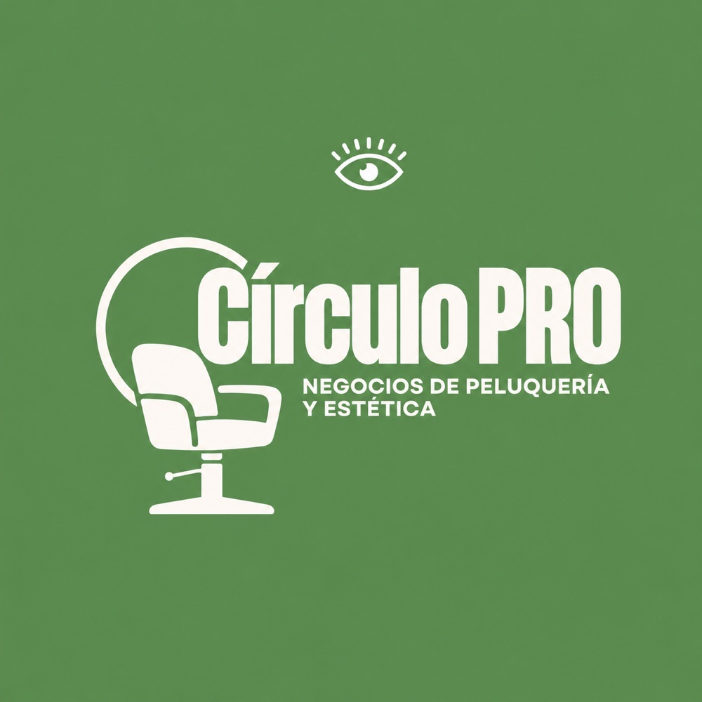

Círculo PRO
Círculo PRO 2027
Innovación para negocios de belleza
El sector de la belleza está cambiando y la pregunta es: ¿vas a liderar el cambio o a dejar que te arrastre?
Círculo PRO no es un curso más; es un sistema de transformación integral donde la estrategia humana y la tecnología de vanguardia se encuentran.
Lo que vas a lograr en el programa
- 015 seminarios de liderazgo y gestión de equipos.
- 025 seminarios sobre negocio y nuevas tecnologías aplicadas al sector beauty.
Convierte tu centro de estética o peluquería en una empresa inteligente, rentable y referente. Menos esfuerzo operativo, más autoridad estratégica.
Reservar mi entrevista para entrar en Círculo PRO 2027